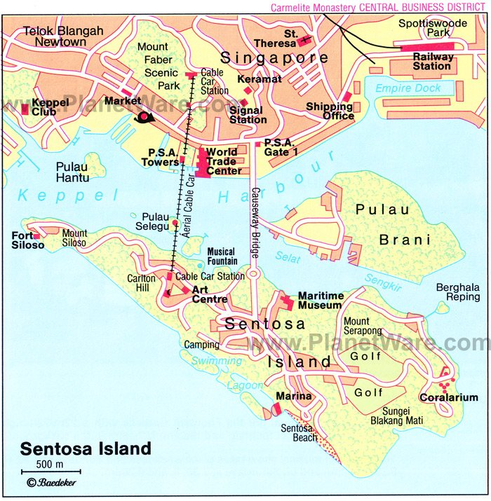

Singapore is an island country off the southern tip of the Malay Peninsula in Southeast Asia. Singapure came into being in 1963. It is a country which is often referred to as the hub of all South Asian contries. It is an island located in South East Asia and is one of the most spectacular places.
Once you've glimpsed this beautifully designed green space you won't be able to stay away. Wander through the Bay East Garden , perfect for enjoying the vibrant plant life and escaping the city bustle for a moment. You won't want to miss Supertree Grove, where you'll find a cluster of the iconic, futuristic structures designed to perform environmentally sustainable functions. Then, head to the Cloud Forest Dome to see the world's tallest indoor waterfall and learn a bit about biodiversity. Check the website for ticket sale prices and tour times.
Singapore isn't exactly known as a beach destination, but if you're really craving some fun in the sun, Sentosa Island is the place to find it.
Siloso Beach is a good spot for getting in beach time, and visitors can play volleyball on free courts or go kayaking and skimboarding.
There are several other beach attractions as well, plus an Underwater World aquarium, where you can swim with dolphins.
A must-see on Sentosa Island is the Merlion, Singapore's famous statue that has the head of a lion and the body of a fish.
You can take an escalator to the top of the statue and enjoy panoramic views of the surrounding area. Adventurous types will want to check out The Flying Trapeze and the SeaBreeze Water-Sports @ Wave House,
where you can try your hand at flying strapped to a water-propelled jet pack.
The map of Sentosa Island

Universal Studios Singapore occupies 49 acres of Resorts World Sentosa. The park is arranged thematically, with each area paying tribute to a location, film, or television show. Destinations include New York City, Hollywood, Madagascar, and a trip back to Ancient Egypt. Fiction-themed areas include Shrek's Far Far Away, Lost World, and Sci-Fi City, where Battlestar Galactica-themed dueling roller coasters and an indoor dark coaster, Revenge of the Mummy, dominate the thrill rides.
Singapore's Merlion is just what it sounds like—the figure of a mythical creature that has the head of a lion and the body and tail of a fish. The Merlion represents the city's humble start as a fishing village combined with its traditional Malay name Singapura, "lion city." The structure, which was relocated to Merlion Park in 2002, where it can overlook Marina Bay, weighs 70 tonnes and stands at 8.6 meters tall, spouting water from its mouth in a fountain. The "Merlion Cub" sits nearby, only two meters tall but a hefty three tonnes, and there are five additional official Merlion statues throughout the city. Merlion Park is an ideal spot for photo-ops, whether you are taking a selfie in front of the iconic creature or capturing the magnificent views from the park as it looks out over the bay.